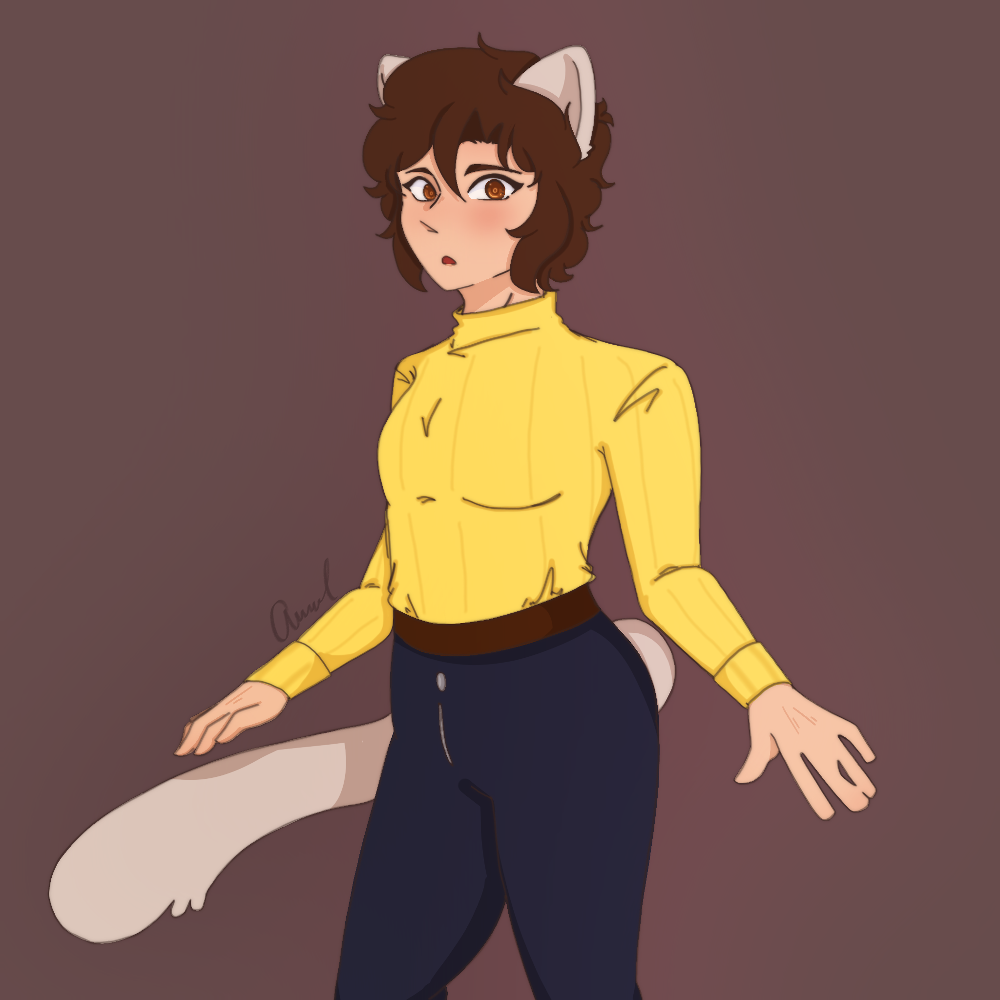
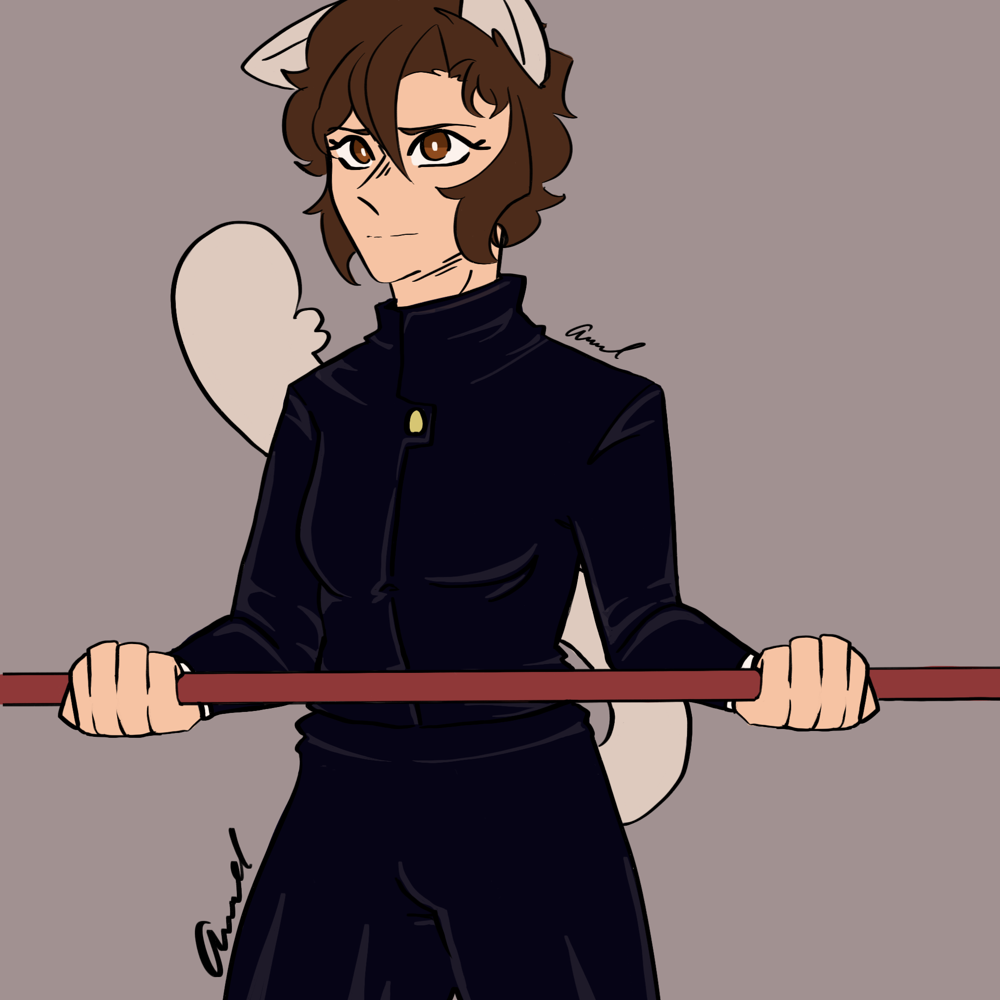

My Short Story
One day when Anzu, a young sorcerer, was out patrolling the streets of Tokyo to make sure they were safe, she was alerted to a sound in the alleyway.
This sound was the result of an evil presence which had seemingly been following her since she left the safety of the protected campus. It made her uneasy and
she decided to follow the sound cautiously. She stepped deeper into the side streets as the sound of traffic slowly faded from her head. Soon enough she was alone, secluded
on these dangerous side streets. The sound of the evil presence stopped filling the air with a choking silence. Anzu knew this procedure all too well. The evil would lure
unsuspecting sorcerers to the abandoned side streets of Tokyo and surprise them with an ambush. This was an attempt to catch the sorcerers at their weakest and to keep them alone.
Anzu prepared herself, summoning her trusty staff. Her usual attire of a yellow sweater and jeans were replaced with a dark jacket and dark pants. Her formal sorcer attire, she would not fight in civilian clothes.
She took a deep breath as she waited for the evil to show itself to her. Behind her, a puddle of rainwater from the night before rippled signifying something broke the surface tension.
Anzu whipped around quickly and struck out with her staff, hitting her target. The evil monster stumbled back from the force of the hit, but quickly recovered. It said nothing, it was incapable of communication.
A weak monster indeed. This would be quick work for a sorcerer of her status, after all, she was the top of her institution. While the monster was vast in size, it lacked power. It had more bark than bite.
Anzu quickly jumped back as the monster struck out at her, barely dodging the claws on its disfigured hand. Using her agility, she managed to dodge its striking attempts and get behind the monster.
This would make her work much easier. She swung her staff again, knowing this hit would connect but was shocked as an eye appeared on its back. The monster dodged with ease and managed to hit her away in the process.
Anzu blocked another hit with her staff as she tried to lift herself off the ground. This wouldn't be as easy as she thought. Anzu couldn't stop to think, she had to fight while trying to find a weakness. If this monster
was as weak as she thought, perhaps she could overpower it by simply charging enough magic power into her staff. If she could land a hit that would work. As Anzu analyzed her opponent from all angles while dodging attacks, the monster
only seemed to grow angrier with her. In its anger, it struck out while leaving its side open. As Anzu charged up her staff with magic power, getting ready to swing, there was suddenly a person at the entrance to the side street.
A bright light filled her vision and she jumped back quickly. As the bright light faded, there was a small crater where the monster once stood. "Need some help?" Anzu knew that voice. Her rival, and the person she hated more than anyone.
"Oh great. You're here. Took you long enough." "Miss me that much?" This long day was about to get even longer.
Anzu's Design & Anzu With Her Staff


Go to Home Page
Go to Contact Us Page